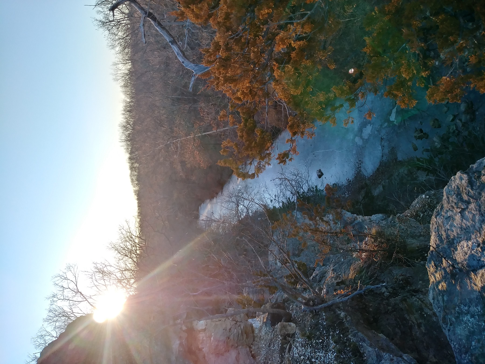

In March, a wide spread of people in the United States started quarantine. Gyms were closed, and schools were cancelled. People were advised to work from home, and they were faced with added stress.
With taking care of children, working, and trying to balance a house, exercise was not a main priority.
Exercise levels started to slow down. Children couldn't play on their sports teams, and playgrounds were blocked off. Trends around the US started to decline.
The purpose of this project is to inspire people with ways to get back on track if they lost their routine. They can learn from the current state of the country to get more inspiration. Hopefully they can find something they never thought of.
Another main goal is for people to have access to therapy and counseling contacts if they have been affected by the pandemic. It is strong to ask for help, and these people are not alone. There are options everywhere either in-person or on the phone.
This is an issue that people have been slowly having to adapt to, but there are ways we as a country can stick together to help.
